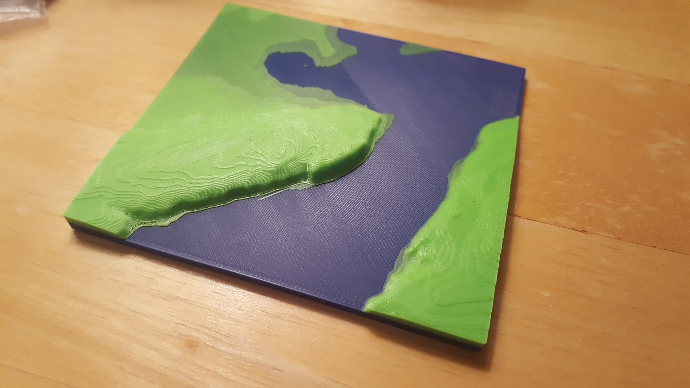
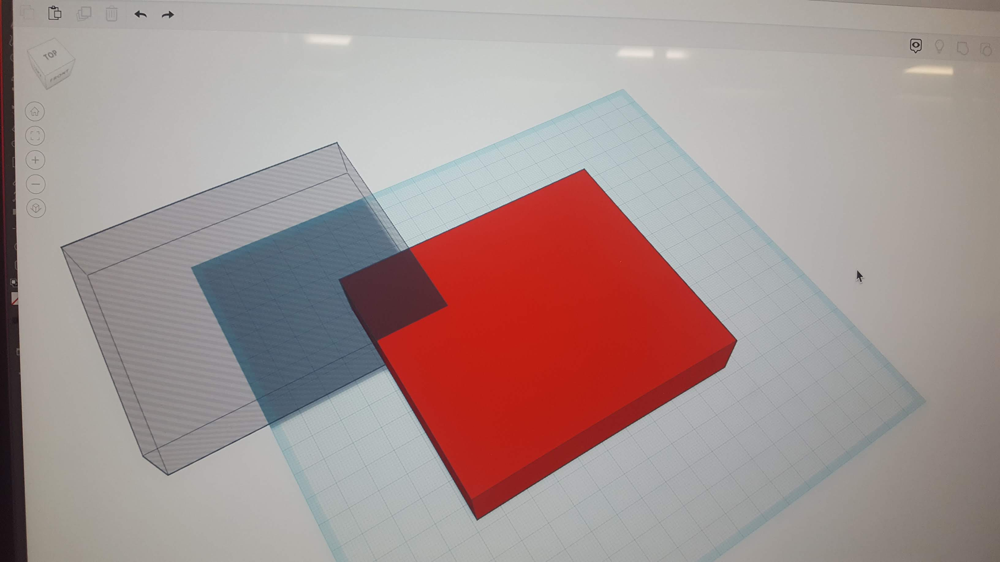
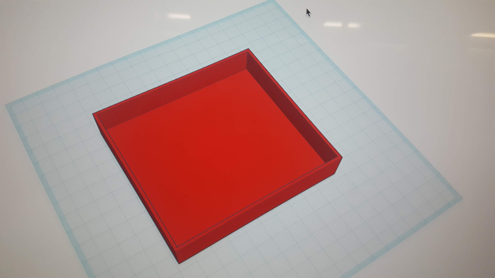
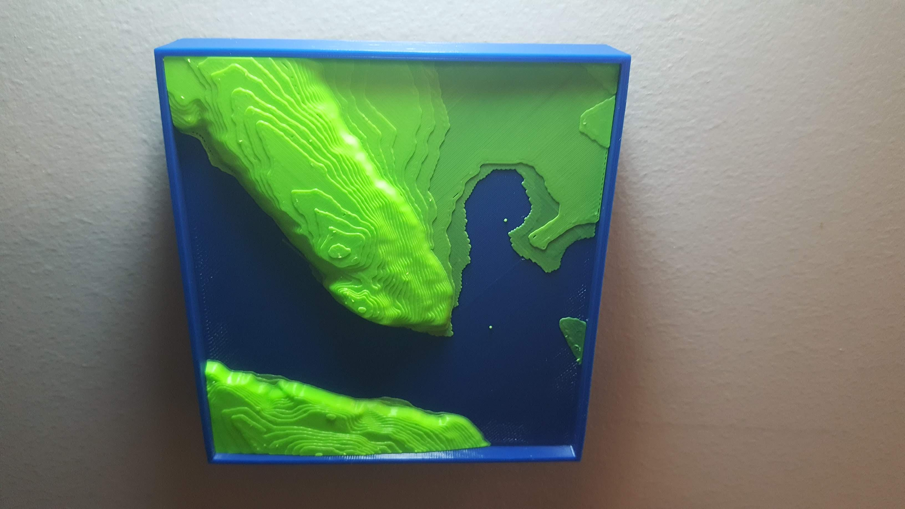

Now, this reflection is supposed to be presenting my idea for my final project, but as it stands, I do not have a finalized idea. Putting it frankly, I have been so constatnly stressed and busy this semester, much of that due to this class, that I have absolutely no inspiration or motivation for a final project. Having come into the class with a passion for 3D printing and an intrest in developing those skills, this class has completely killed that passion and I cannot think of a single idea I want to pursue. I came up with a few placeholder ideas, a 3D-printed figure integrated with lights, an interlocking system of tabletop gaming terrain, and a shadowbox featuring layered cutouts to great depth, which I will put the sketches for below in that order, but I have essentially zero investment in any of these. Hopefully I'll be able to come up with something to do sooner rather than later.
Having settled on the plan of making a 3D printed toppgraphic map using the multi-color printer, I used the TouchTerrain website to generate an STL of the terrain of Quebec city, and printed it out, using blue for the water of the St. Lawrence river, and green for the land. The print is pictured below, and the final version will feature a wooden frame with an engraved name, and will also likely be slightly larger and with more definition of the terrain.
Due to personal problems getting I've been having all semester, as well as difficulty in coming up with an idea, my project doesn't neatly follow the rubric, but I'll do my best to document it as best as possible. While my original plan was to utilize the laser cutter to creat a wooden frame for the topographical map, problems with the air filter forced me to find something else. After briefly considering using cast resin, with no time left I elected to just create another PLA printed piece for the frame. Using Tinkercad, I created a base using measurements taken with the electronic caliper. One print later, I had my frame and the map fit in perfectly, just in time for the show.
  I really wish things had worked out better this semester, but it has just been a stressful, difficult experience thorugh and through. I wish I could've come up with something amazing for the final project, but I was simply too overwhelmed to come up with something as good I wanted.